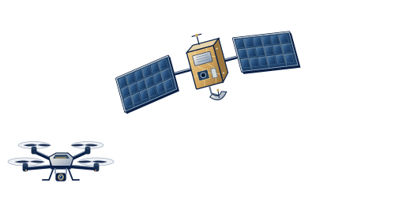
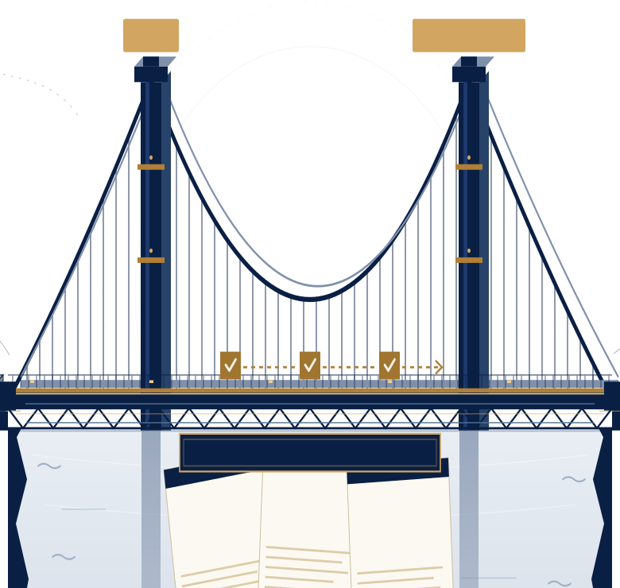
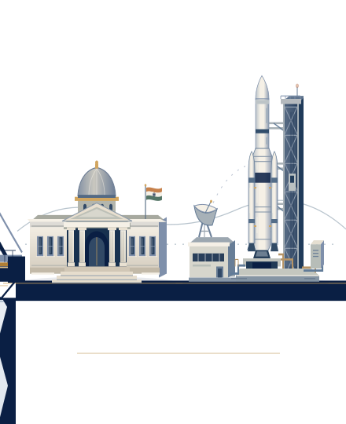

KRISEVADEFENCE + SPACE
We bridge
procurement.
Two sides. One connected evidence trail.

01 / 06
THE GAP
Paperwork slows
both sides.
Requirements. Bids. Supporting evidence.
TenderNeeds
BidResponse
EvidenceSource
02 / 06
FOR SUPPLIERS
TAS
Find tenders.
Prepare your bid.
1
Relevant tenderFind the opportunity
2
Your responsePrepare the bid
3
Evidence attachedKeep the source
03 / 06
THE KRISEVA CROSSING
Answers travel
with evidence.
From requirement to source.

TAS
Evaluator
✓Evidence
04 / 06
FOR BUYERS
Evaluator
Check evidence.
Review bids.

✓
FindingSource page attached
05 / 06
PEOPLE STAY IN CONTROL
People
decide.
From paperwork to proof.
TASEvaluator
On your premises.
 KRISEVA
KRISEVA06 / 06